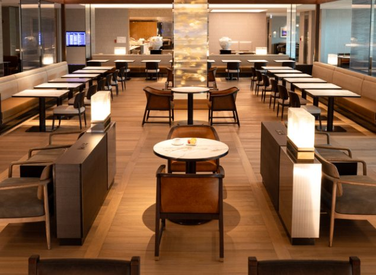
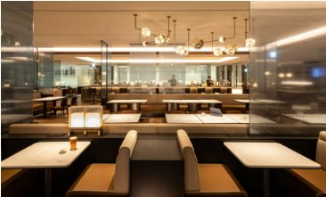
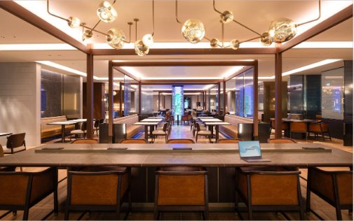
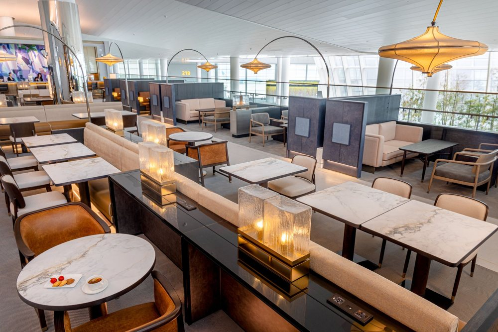

KE645 · ICN T2
12/2(수) 가는 날, 출국 심사를 마치고 비행기 타기 전까지 쉬는 곳이에요. 4명 모두 들어갈 수 있어요.
대한항공 앱에서도 볼 수 있어요. 출국 심사 바로 앞 248·253번 쪽은 가까워서 자주 붐비고, 양 끝 가든 라운지는 조금 걸어야 하지만 대체로 한가해요.
제2터미널은 출국장이 두 곳이라, 덜 기다리는 쪽으로 들어가면 돼요. 어느 쪽으로 나가도 4층 라운지까지 갈 수 있어요.




표는 옆으로 밀어서 보세요 →
| 라운지 | 게이트 | 뷔페 | 샤워 | 라면 도서관 | 오락실 | 정원 |
|---|---|---|---|---|---|---|
| 서편 | 248 | ○ | ○ | ✕ | ✕ | ✕ |
| 동편 좌측추천 | 253 | ○ | ○ | ○ | ○ | ✕ |
| 동편 우측 | 253 | ○ | ○ | ✕ | ✕ | ✕ |
| 가든 서편 | 218 | ○ | ○ | ✕ | ✕ | ○ |
| 가든 동편 | 281 | ○ | ○ | ✕ | ✕ | ○ |
동편 좌측은 라면을 직접 끓여 먹는 라면 도서관, 쿠킹 스튜디오, 사진 부스가 있어 재미있어요. 조용히 쉬고 싶으면 나무가 많은 가든 라운지가 좋아요.
음식과 술은 무료로 마음껏 드셔도 돼요. 비행기에서도 저녁이 나오니 너무 배부르게 드시진 마세요.
창이공항에서는 라운지를 이용할 수 없어요. 대신 쥬얼에서 저녁을 먹고 가요.
대한항공 공항 라운지 안내와 블로그 비교글 기준 (2026년 11월 확인). 라운지 사정에 따라 시간이 바뀔 수 있어요.